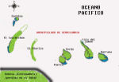

De: La Frikipedia, la enciclopedia extremadamente seria.
De: La Frikipedia, la enciclopedia extremadamente seria. De: La Frikipedia, la enciclopedia extremadamente seria.
| De la serie Países del planeta tierra: | |||||
| República Marranera del Cochino | |||||
|---|---|---|---|---|---|
| |||||
| Lema: al barro guarro! | |||||
| Himno: de mi todo se aprobecha...por Diox no me comas!...
| |||||
| 
| |||||
| Capital | Puerca | ||||
| Mayor ciudad | Guarra | ||||
| Lenguas oficiales | Oink y Hoygan | ||||
| Gobierno | República Marranera de putas y de borrachera | ||||
| Gran Barbacoa | Porcino II | ||||
| Área | un archipielago en el Pacífico, cerca de la isla privada de Mel Gibson | ||||
| Población | 500.000.000 de cabezas de ganado | ||||
| Moneda | Ruffles | ||||
| Zona horaria | GTM +5, por el culo te la... | ||||
| Dominio Internet | .crd | ||||
| Código telefónico | 69
| ||||
| Un gusto para el paladar | |||||
La República Marranera del Cochino o Cerdilandia, como es llamada vulgarmente, es una República situada en el archipielago de Cerdilandia, cerca de la isla pribada de Mel Gibson. Se encuentra en el Oceano Pacífico y esta integrado en el continente americano.
Este país fue fundado en la edad media, mas o menos por la epoca en que los Islamicos estaban destruyendo Castilla, en la actual Aspaña. Por aquella epoca de hambruna la carne de cerdo era cada vez mas solicitada y los cerdos morían por momentos. Pero todo esto acabo, aprobechando que los arabes no les podían comer por su religión fueron viajando hacia el sur desde todos los rincones de Europa, mientras que los arabes abanzaban hacia el norte. Finalmente todos los cerdos fueron a la Deesa, donde fundaron su país, La Deesa. Pero esto les supuso la guerra contra los Arabes, debido a la naturaleza cobarde del cerdo algunos volvieron hacia sus lugares de origen, otros se quedaron en la Deesa eliminandola como país y unos pocos embarcaron en una barco; en busqueda de alguna isla en el remoto Atlantico.
Después de muchos meses de peregrinación los por los mares sin saber donde se encontraban, un cerdo abisto tierra firme y Don Cerdobal Colon descubrio unas islas prosperas llenas de bellotas. Desembarco en la actual Puerca y allí fundo la capital y el nuevo país, nombrandose el primer Gran Barbacoa.
En el nuevo país, que llamaron Cerdilandia a secas, solo se poseia la isla de Puerca, pero con el tiempo se fueron explorando las islas cercanas. En algunas de ellas, como la Isla del Jamón, encontraron jabalíes nativos de piel negra y afilados colmillos que practicaban el canibalismo.
Así que en 1500 se prohibio el consumo de carne y todos se volvieron vegetarianos, siendo castigado el carnivorismo con muerte al Horno Pirólitico Fagor y posterior venta en supermercados Eroski.
Durante muchos años se practicaba el Ateismo o el Animismo de los nativos, pero en 1547 el Gran Barbacoa Churrasco impuso el Islamismo como religión obligartoria, siendo castigado el no cumplimiento con muerte a la parrilla y posterior venta en Lidl supermercados.
«No es que el Islamismo me guste en especial, pero son los unicos que no se imaginan un banquete en un restaurante de mientras nos miran»
~ Churrasco congreso de diputados 1547
Así, como el consumo de cerdo estaba prohibido en el Islamismo, Cerdilandia adopto el Islamismo obligatorio para toda la población indistintamente de la raza o condición social.
En 1702, las tensiones entre grupos etnicos ahumentaron y los cerdos de raza blanca sumieron a los de raza negra en la esclavitud mas extrema, los tenian años trabajando y luego los vendian a los humanos para su consumo, dando a conocer los hoy actuales como jamones de pata negra. Esto duro muchos años y supuso muchos movimientos contra la República Islamica y Conservadora.
En 1900 los nativos de la isla o Jabalís, alzaron un movimiento comunista y liberaron a los negros de la esclavitud. Ante la presion blanca, decidieron esclabizar a los humanos. Todo esto supuso el enfrontamiento con Chuck Norris, ya que en esta isla los humanos son esclabizados e ingeridos desde principios del sXX. Jara y sedal se alzo al poder del país y lo goberno, convirtiendo Cerdilandia en un Regimen Comunista, asta el ascenso de Pata Negra.
Con el ascenso al poder de Pata negra, debido a su golfura y falta de chucknorricismo, el pais se a sumido en una eterna crisis. La economia por los suelos, orgias callejeras, delincuencia, drogas, antipastafarismo, ingestion de humanos...etc Actualmente cerdos y marranas conspiran para matarle y venderlo a muy elevado precio de ruffles.
Cuando el estado se fundo muchos propusieron una nueva moneda, como el dinero escaseaba Chuck Norris les propuso adoptar la Margarita, (en realidad se cree que fue para burlarse de ellos). Así sin minerales, los Cerdilandeses pagaban y cobraban en Margaritas, pero inexplicablemente desaparecian. De aquí surgio la mítica frase:
«Es como echarle margaritas a los cerdos, jej»
~ Chuck Norris tronchandose de la risa
El presidente Gran Barbacoa del momento, Porcino I, decidio poner una moneda de metal, que no se pudiera comer. Pero, no funciono y cada vez eran mas los cerdilandeses que acudian a los centros medicos por ingestión de metales, mientras Chuck se partía.
Al final Porcino I se rindio y puso las patatas Ruffles como moneda, y creo que no hace falta decir que tambien se las comen.
Estudiosos de la economia no han descubierto el enigma de porque la economia de Cerdilandia esta por los suelos, pero esta claro por que.
El idioma nacional es el Oink, debido a el poco nivel intelectual de sus hablantes cada palabra corresponde a un numero de Oinks. Por ejemplo, hola es un Oink, adios dos Oinks, que tal 14 Oinks, estatuto 4000 Oinks, politico 1000 oinks...etc. Y asi va el país!
Por eso se vieron obligados a reconocer el Hoygan como segunda lengua, también incomprensible, pero por lo menos no tardan media hora en decirte: Que tal?
Juegos Olímpicos de verano Posición de La República Marranera de los Cochinos en el medallero
| Metales | Colleja | Oro | Plata | Bronce | |
| Atenas 2004 | 1 | 0 | 0 | 0 | 20º |
| Sydney 2000 | 0 | 0 | 0 | 0 | 25º |
| Atlanta 1996 | 0 | 0 | 0 | 0 | 13º |
| Barcelona 1992 | 0 | 0 | 0 | 0 | 6º |
| Seúl 1988 | 0 | 0 | 0 | 0 | 26º |
| Los Angeles 1984 | 0 | 0 | 0 | 0 | 20º |
| Moscú 1980 | 0 | 0 | 0 | 0 | 20º |
| Montreal 1976 | 0 | 0 | 0 | 0 | 31º |
| Munich 1972 | 0 | 0 | 0 | 0 | 48º |
| Roma 1960 | 0 | 0 | 0 | 0 | 44º |
| Helsinki 1952 | 0 | 0 | 0 | 0 | 36º |
| Londres 1948 | 0 | 0 | 0 | 0 | 29º |
| Los Angeles 1932 | 0 | 0 | 0 | 0 | 26º |
| Amsterdam 1928 | 0 | 0 | 0 | 0 | 27º |
| Amberes 1920 | 0 | 0 | 0 | 0 | 18º |
| París 1900 | 0 | 0 | 0 | 0 | 15º |
| Totales | 1 | 0 | 0 | 0 | 28º |
Campeonato mundial de tirar piedras
Posición de La República Marranera de los Cochinos en el medallero
| Metales | Colleja | Oro | Plata | Bronce |
| Plasencia 2004 | 1 | 0 | 0 | 0 |
Blancos 40%
Negros 40%
Aborigenes 28%
Mulatos 1%
Autor(es):